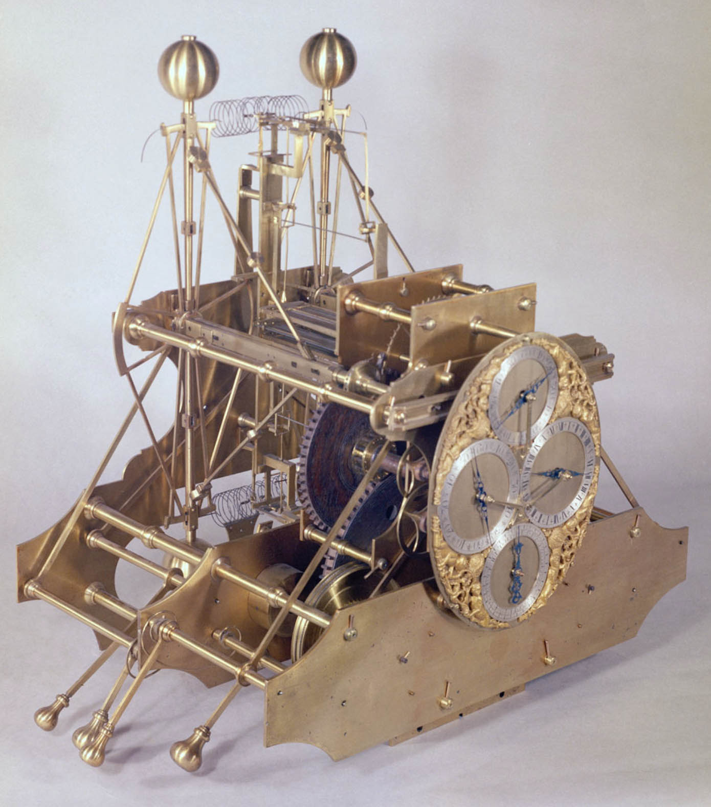

"Longitude allows the measurement of east-west location"
ARC 594/694 Fall
Dr. Timothy Norris - tnorris@miami.edu Adapted from Field (2017) Cartography. Redlands, ESRI Press. pp. 280-281.
Longitude
Cannot be measured by star positions or other landmarks (unlike latitude)
As an arbitrary measure, the earth rotates 360 degrees in 24 hours or 15 degrees per hour
Even more arbitrary, the prime meridian located in Greenwich England was set by Sir George Airy in 1851; by 1884 it was accepted by most nations as zero degrees longitude
To navigate using longitude you need accurate clocks

H1
John Harrison's first attempt at a seaworthy timekeeper (~1730-35)
weighed 72 pounds
won parts of a prize for £20,000 from the Royal Society for his life's work
Sobel, Dava. (1995). Longitude: The True Story of a Lone Genius Who Solved the Greatest Scientific Problem of His Time. New York: Walker and Company.